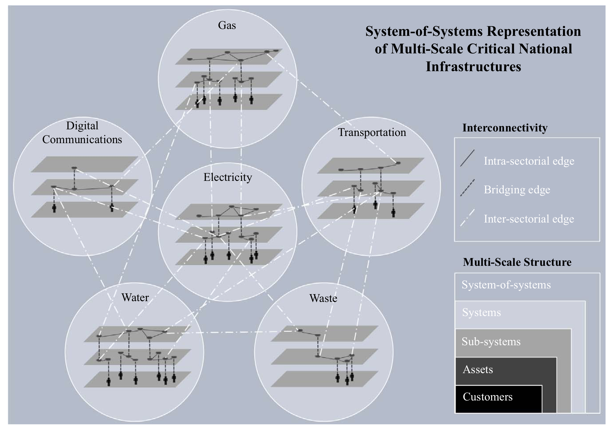
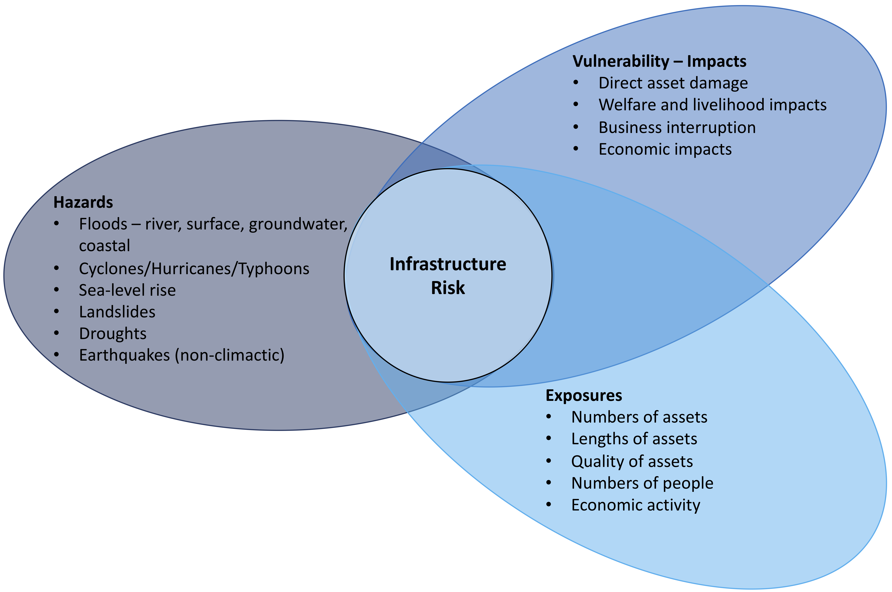
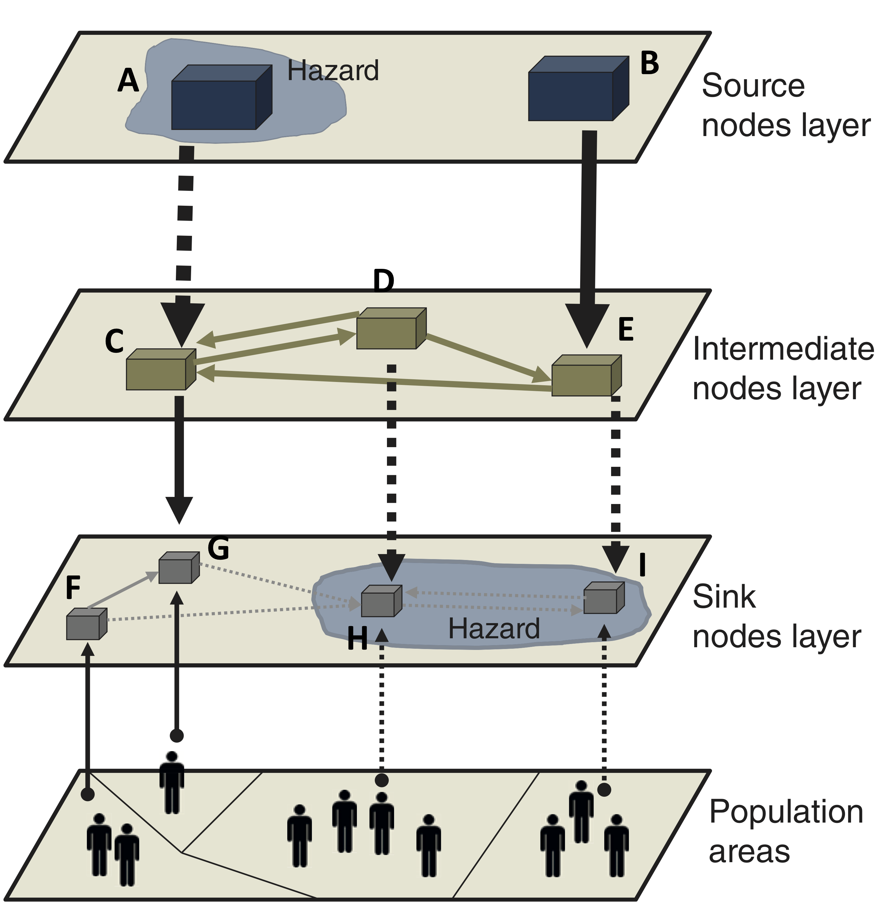
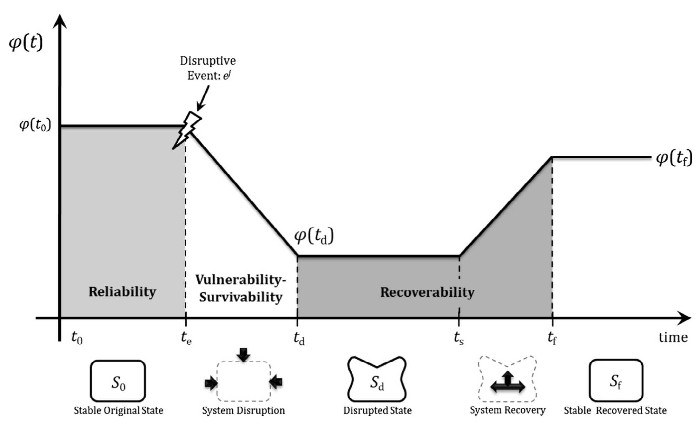

This mini-lecture introduces the concept of infrastructure networks. It also lists the definitions of hazards, exposures and vulnerabilities in a general context and within the context of infrastructures. The concept of infrastructure resilience is also introduced in the lecture.
This lecture specifically looks at the infrastructures included within energy, transport, water, waste, and telecommunications sectors.
These infrastructures have been defined as “the collection and interconnection of all physical assets and human systems that are operated in a coordinated way to provide a particular infrastructure service” (Hall et al. 2016). This definition emphasises the importance of the services that infrastructures provide, such as energy, water, mobility or data connectivity, which are critical for the survival and security of societies and economies. Hence, the term critical infrastructure is also used with reference to such systems (Mann 2009).
Critical infrastructures have evolved into large spatially distributed networks that generally exhibit multi-scale hierarchical structures (Thacker, Pant, and Hall 2017). We observe such hierarchies, for example: in electricity networks where larger high-voltage transmission systems provide power to smaller low-voltage distribution systems.
Infrastructure networks are also typically interdependent, which implies that they affect each other through the exchange of physical resources, geographic proximity, information exchange, and socio-economic factors (Rinaldi, Peerenboom, and Kelly 2001). For example, telecommunications networks cannot function without electricity supply, and in turn most operations of the electricity networks require information exchange through a telecommunications network.
We conceptualise the collective representation of the interdependent hierarchical infrastructure networks as a ‘system-of-systems’ that provides goods and services to individual members of the population, households, business and industrial installations (see Figure 8.2.1) (Thacker, Pant, and Hall 2017).

Figure 8.2.1: System-of-systems representation of interdependent hierarchical infrastructure networks connected to customers and the economy (Thacker, Pant, and Hall 2017)
Critical infrastructures are exposed to hazards, which introduce vulnerabilities and risks to such systems. We first provide some definitions here, relevant to developing our understanding of infrastructure risks. All definitions are from the Intergovernmental Panel on Climate Change (IPCC)(Field and Barros 2014).
Hazard refers to the possible future occurrence of natural or human-induced physical events that may have adverse effects on vulnerable and exposed elements. For example, a flood that breaches flood defences and damages roads would be classified as a hazard. If there were no breaches and damages, then the same event would not be classified as a hazard. It is a hazard only when it threatens systems.
Exposure refers to the inventory of elements in an area in which hazard events may occur. For example, the numbers of houses, roads, railway lines, electricity substations within a flooded area would be considered as exposed to a flooding hazard.
Vulnerability refers to the propensity of exposed elements such as human beings, their livelihoods, and assets to suffer adverse effects when impacted by hazard events. For example, the inability of people to get access to markets because their nearest bridge gets washed away during a flood makes them vulnerable to aflooding hazard.
Risk is a combination of the hazard, exposure, and vulnerability. It is often represented as a probability of occurrence of hazardous events or trends multiplied by the consequences of impacts to vulnerable systems if these events or trends occur (Oppenheimer et al. 2015).
Figure 8.2.2 shows how infrastructure risk is conceptualised as a combination of hazards, exposures and vulnerabilities, and the different types of elements being measured in quantifying the different components of risks.

Figure 8.2.2: Conceptualising infrastructure risks as a combination of hazard, exposures and vulnerabilities
Broadly, all infrastructure networks can be conceptualised as collections of three types of layers (Thacker, Pant, and Hall 2017; Pant et al. 2018):
Source layers: Where resources are generated - for example, power generation sites, rivers and reservoirs for water
Intermediate layers: Where resources are stored and (or) converted to be delivered further downstream - for example, electricity transmission substations and cables, ports, water treatment plants
Sink layers: Which resources are connected to the final customers (people, businesses, systems) who receive the infrastructure service - for example, electricity, gas and water distributions systems connected to homes, local roads.
Figure 8.2.3. (see next section) shows a graphical representation of a multi-scale hierarchical infrastructure network. We note that these layers are not necessarily rigid and in many cases some assets and layers might serve as source, intermediate and sink - for example, transport layers are all sources (origins), intermediates and sinks (destinations) to facilitate journeys for people and goods.
Due to the multi-scale hierarchical structures of infrastructure networks, hazards affect them at multiple locations and scales. The connectivity between source, intermediate and sink layers plays a crucial role in controlling and magnifying risks, which is demonstrated here through Figure 8.2.3 (Pant et al. 2018).
Here the hazard affecting the source layer asset (A) breaks the flow of service (A->C) to the intermediate layer. But there is another flow of service (B->E->C) that keeps the service going. This prevents the disruption from proceeding further in the network towards customers. But for another hazard affecting the sink layer assets (H and I) there are no alternative flows and all flow linkages (shown in dotted lines are all ineffective), so the customers become vulnerable.
This simple example showcases a very important effect associated with infrastructure networks – the cascading effect. Cascading is a process where small initial failures manifest into larger events (Watts 2002) – for example, an electricity substation failure could knock out telecommunications, water, and railways network using the electricity, thereby creating a cascading effect of much larger disruptions than the original failure which was only that of the electricity substation.

Figure 8.2.3: Graphical representation of the hazard exposures and disruption propagation effects seen in multi-scale hierarchical structures of infrastructure networks (Pant et al. 2018)
To protect against or diminish risks, infrastructure should be resilient. There are many interpretations and definitions on resilience and there is a wide literature review on the subject (Hosseini, Barker, and Ramirez-Marquez 2016). Relevant to all resilience frameworks are four aspects: anticipate, absorb, adapt and recover (Hickford et al. 2018).
For infrastructures, the interpretation of these concepts is explained through Figure 8.2.4 (Pant et al. 2014).
The ability of an infrastructure to anticipate external hazard shocks is built into its reliability. For example, making a road flood-proof in advance of knowing the severity of floods that could affect it.
The ability to absorb shocks is reflected in the decrease of level of services while some function is still possible, which is also a measure of the vulnerability or survivability.
The abilities to adapt and recover are reflected in the recoverability of the infrastructure systems, which are the results of combinations of actions and plans put in place to get the system back to its pre-shock failure levels of service.
In the context of a network, two mechanisms by which all the above aspects of resilience are enhanced include (Hickford et al. 2018):
Robustness: When the network assets are built to absorb shocks and maintain function
Redundancies: When the networks have alternative routes within or connections with other networks to continue the services. For example, alternative routes can be used in road networks to bypass a damaged road, or electricity backup supply can be provided for networks that rely on a continuous supply of electricity.

Figure 8.2.4: Transitions of an infrastructure system to different states of service levels during a disruption and resilient recovery (Pant et al. 2014)
In this lecture, we introduced the concept of infrastructure networks. We showed how infrastructures exist as interdependent multi-scale hierarchical infrastructure networks in a system-of-systems that provides goods and services to individual members of the population, households, businesses and industrial installations. We also used existing definitions of hazard, exposure and vulnerability and looked at them in the context of infrastructure. We showed how the multi-scale hierarchical structures of infrastructure network play a crucial role in risk propagation and cascading effects. Finally, we provided a definition and understanding of resilience that is relevant to infrastructures. These definitions are very important in understanding and quantifying infrastructure failures and risks, and how to prepare systems to be more resilient.